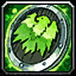
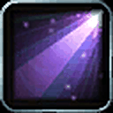

WoW FOREVER BETASHAMAN · LEVELING GUIDE TEMPLATE
42TRAINER ABILITIES
147ABILITY RANKS
50TALENTS
5RACES

SHAMAN
ENHANCEMENT · LEVEL 1 → 30 · WoW FOREVER BETA
Elemental




16 talents
Enhancement


THIS GUIDE · 18 talents
Restoration




16 talents
template condensed from Mobalytics WoW Forever · Shaman Leveling Guide (Level 1-30) · NickTew · edit freely